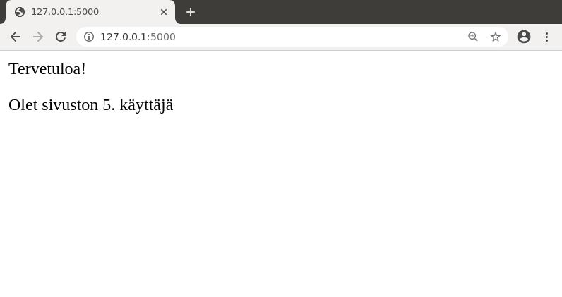
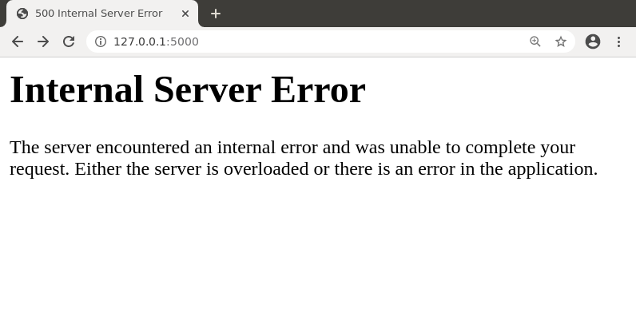
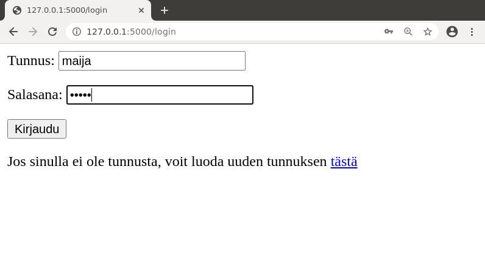
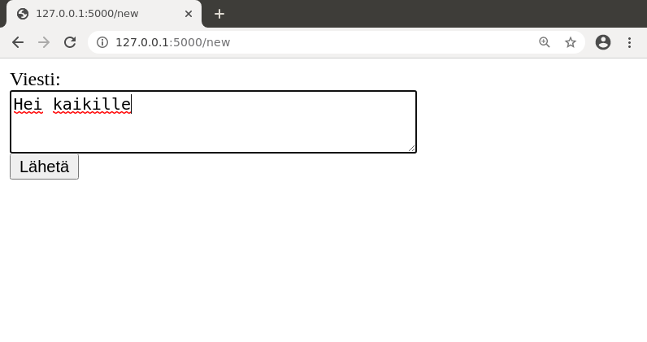
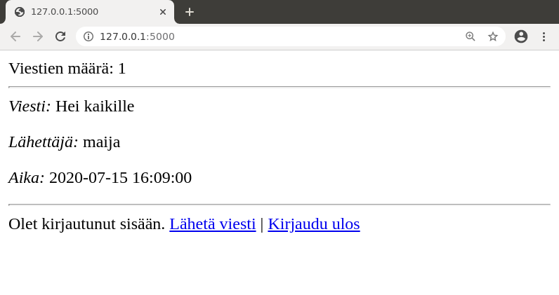

Osa 3
Tämän osan aiheita ovat versionhallinta (Git) sovelluksen kehittämisessä, sovelluksen siirtäminen tuotantoon julkiselle palvelimelle, virheiden etsiminen koodista sekä koodin rakenteen parantaminen jakamalla se tiedostoihin.
Kurssin lisämateriaalissa on Git-vinkkejä, joista on hyötyä sovelluksen kehittämisessä tällä kurssilla ja muutenkin.
Versionhallinta
Käytämme kurssilla versionhallintaan GitHubia. Seuraavaksi käymme läpi esimerkin, jossa aloitamme sovelluksen kehityksen GitHubissa.
Teemme pienen sovelluksen, joka tallentaa tietokantaan sivuston kävijöiden määrän ja näyttää tämän tiedon etusivulla. Esimerkki olettaa, että GitHubiin on luotu uusi repositorio tsoha-visitors, jossa on tiedosto README.md mutta ei vielä muuta.
Seuraavat komennot kloonaavat repositorion omalle koneelle, luovat sovellusta varten virtuaaliympäristön sekä asentavat tarvittavat kirjastot. Tässä ja myöhemmin vastaavissa kohdissa user on käytetty GitHub-tunnus.
$ git clone https://github.com/user/tsoha-visitors.git
Cloning into 'tsoha-visitors'...
remote: Enumerating objects: 3, done.
remote: Counting objects: 100% (3/3), done.
remote: Total 3 (delta 0), reused 0 (delta 0), pack-reused 0
Unpacking objects: 100% (3/3), done.
$ cd tsoha-visitors/
$ python3 -m venv venv
$ source venv/bin/activate
(venv) $ pip install flask
(venv) $ pip install flask-sqlalchemy
(venv) $ pip install psycopg2
(venv) $ pip install python-dotenv
Luomme tietokantaan yhden taulun, johon tallennetaan jokaisen kävijän vierailuaika:
CREATE TABLE visitors (id SERIAL PRIMARY KEY, time TIMESTAMP);
Sovellus muodostuu seuraavista tiedostoista:
app.py
from flask import Flask
from flask import redirect, render_template
from flask_sqlalchemy import SQLAlchemy
from os import getenv
app = Flask(__name__)
app.config["SQLALCHEMY_DATABASE_URI"] = getenv("DATABASE_URL")
db = SQLAlchemy(app)
@app.route("/")
def index():
db.session.execute("INSERT INTO visitors (time) VALUES (NOW())")
db.session.commit()
result = db.session.execute("SELECT COUNT(*) FROM visitors")
counter = result.fetchone()[0]
return render_template("index.html", counter=counter)
index.html
Tervetuloa!
<p>
Olet sivuston {{ counter }}. käyttäjä
.env
DATABASE_URL=postgresql:///user
Ideana on, että aina kun käyttäjä lataa etusivun, tauluun visitors lisätään uusi rivi. Tämän jälkeen haetaan taulun rivien määrä, joka kertoo kävijöiden yhteismäärän.
Nyt voimme kokeilla suorittaa sovelluksen:
(venv) $ flask run
Sovelluksen käyttäminen näyttää tältä:

Tiedostojen lisääminen repositorioon
Koska sovelluksen ensimmäinen versio toimii, nyt on hyvä hetki lisätä sovelluksen tiedostot repositorioon. Hyödyllinen komento on git status, joka näyttää repositorion tilanteen. Komento antaa nyt seuraavan tuloksen:
(venv) $ git status
On branch main
Your branch is up to date with 'origin/main'.
Untracked files:
(use "git add <file>..." to include in what will be committed)
.env
__pycache__/
app.py
templates/
venv/
nothing added to commit but untracked files present (use "git add" to track)
Komento antaa listan tiedostoista ja hakemistoista, joita ei ole repositoriossa:
.envon luomamme tiedosto, jossa on ympäristömuuttujia__pycache__on sovelluksen suorituksen aikana syntynyt hakemisto, jossa on tavukoodiksi käännetty sovellusapp.pyon luomamme tiedosto, jossa on sovelluksen kooditemplateson hakemisto, jossa on sivupohjaindex.htmlvenvon hakemisto, joka sisältää virtuaaliympäristön tarvitsemat tiedostot
Tärkeä asia versionhallinnassa on päättää, mitkä tiedostot laitetaan repositorioon kaikkien saataville. Tässä tapauksessa repositorioon kuuluvat app.py ja templates, jotka muodostavat sovelluksen toteutuksen. Sen sijaan .env, __pycache__ ja venv eivät kuulu repositorioon, koska ne liittyvät sovelluksen kehittäjän ympäristöön eivätkä sovelluksen toteutukseen.
Komento git add laittaa tiedostoja lisättäväksi:
(venv) $ git add app.py
(venv) $ git add templates
Nyt git status näyttää muuttuneen tilanteen näin:
(venv) $ git status
On branch main
Your branch is up to date with 'origin/main'.
Changes to be committed:
(use "git reset HEAD <file>..." to unstage)
new file: app.py
new file: templates/index.html
Untracked files:
(use "git add <file>..." to include in what will be committed)
.env
__pycache__/
venv/
Tämä näyttää hyvältä, koska oikeat tiedostot ovat menossa repositorioon, joten voimme suorittaa komennot git commit ja git push:
(venv) $ git commit -m "Create first version"
(venv) $ git push
Tämän seurauksena sovelluksen nykyinen versio on tallessa GitHubissa.
Tiedosto .gitignore
Tiedosto .env ja hakemistot __pycache__ ja venv eivät siis kuulu repositorioon, mutta ne näkyvät häiritsevästi listassa aina, kun suoritamme komennon git status.
Hyödyllinen tiedosto on .gitignore, joka määrittää, mitä tiedostoja ja hakemistoja emme halua viedä repositorioon. Tässä tapauksessa tiedoston sisältö voisi olla:
.env
__pycache__
venv
Tämän tiedoston luomisen jälkeen git status alkaa näyttää siistimmältä:
(venv) $ git status
On branch main
Your branch is up to date with 'origin/main'.
Untracked files:
(use "git add <file>..." to include in what will be committed)
.gitignore
nothing added to commit but untracked files present (use "git add" to track)
Tiedosto .gitignore kuitenkin lisätään repositorioon:
(venv) $ git add .gitignore
(venv) $ git commit -m "Add .gitignore"
(venv) $ git push
Tästä lähtien tiedostossa .gitignore mainitut tiedostot ja hakemistot eivät ole ehdolla repositorioon lisättäväksi. Projektin kehityksen aikana tiedostoon .gitignore voi lisätä tarvittaessa lisää sisältöä.
Sovelluksen riippuvuudet
Komento pip freeze kertoo, mitkä ovat sovelluksen riippuvuudet eli mitä kirjastoja sovellus tarvitsee toimiakseen. Kun suoritamme komennon nyt, saamme seuraavan tuloksen:
(venv) $ pip freeze
click==7.1.2
Flask==1.1.2
Flask-SQLAlchemy==2.4.4
itsdangerous==1.1.0
Jinja2==2.11.3
MarkupSafe==1.1.1
pkg-resources==0.0.0
psycopg2==2.8.6
python-dotenv==0.15.0
SQLAlchemy==1.3.23
Werkzeug==1.0.1
Tämä lista kertoo jokaisesta kirjastosta, minkä kirjaston version sovellus vaatii. Huomaa, että jos suoritat komennon itse, voit saada vähän eri versioita.
Sovelluksen riippuvuuksista on tapana tehdä tiedosto requirements.txt. Tämä tiedosto tallennetaan repositorioon:
(venv) $ pip freeze > requirements.txt
(venv) $ git add requirements.txt
(venv) $ git commit -m "Add requirements"
(venv) $ git push
Nyt jos toinen henkilö hakee sovelluksen GitHubista, hän voi asentaa virtuaaliympäristöönsä tarvittavat kirjastot seuraavalla komennolla:
(venv) $ pip install -r requirements.txt
Tietokannan rakenne
Repositoriosta puuttuu vielä tieto siitä, mikä on sovelluksen käyttämän tietokannan rakenne. Tätä varten luomme tiedoston schema.sql, joka sisältää tietokannan skeeman. Tässä sovelluksessa tietokannassa on vain yksi taulu ja tiedoston sisältö on seuraava:
CREATE TABLE visitors (id SERIAL PRIMARY KEY, time TIMESTAMP);
Lisäämme uuden tiedoston repositorioon:
(venv) $ git add schema.sql
(venv) $ git commit -m "Add SQL schema"
(venv) $ git push
Tästä lähtien sovelluksen tarvitsemat taulut voi luoda tietokantaan seuraavasti ohjaamalla tiedostossa schema.sql olevat komennot PostgreSQL-tulkille:
(venv) $ psql < schema.sql
Huomaa, että aina kun sovelluksen tietokannan rakenne muuttuu, myös tiedostosta schema.sql täytyy tehdä uusi versio ja lähettää se repositorioon. Tämän avulla repositoriossa on aina tieto siitä, millainen on sovelluksen senhetkinen tietokanta.
Sovellus tuotantoon
Sovelluksen laittaminen tuotantoon tarkoittaa, että sovellus julkaistaan käyttäjille. Tällä kurssilla harjoittelemme tuotantoon laittamista Heroku-palvelun avulla. Heroku tarjoaa ilmaiseksi palvelintilaa, jonne voi sijoittaa muun muassa Flaskilla toteutetun web-sovelluksen.
Käymme läpi seuraavaksi esimerkin, jossa siirrämme äsken luodun kävijäsovelluksen Herokuun. Jotta voit käyttää Herokua, sinun täytyy luoda ensin tunnus palveluun. Tunnuksen luominen on ilmaista, mutta huomaa, että Heroku tarjoaa myös maksullisia palveluja.
Herokun ilmaisversiossa on joitakin merkittäviä rajoituksia. Sovellus saa käyttää rajoitetun määrän palvelimen aikaa kuukaudessa, ja jos sovellusta ei käytetä hetkeen, se sulkeutuu ja seuraavan käyttäjän saapuessa vie jonkin verran aikaa, ennen kuin sovellus käynnistyy uudestaan. Lisäksi tietokannan kokoa on rajoitettu niin, että tauluissa saa olla yhteensä enintään 10000 riviä. Näiden rajoitusten vuoksi Herokun ilmaisversio ei sovellu todellisten sovellusten alustaksi, mutta sen avulla voi harjoitella web-sovelluksen julkaisemista.
Herokussa olevaa sovellusta voidaan hallinnoida kahdella tavalla: nettiselaimella Herokun sivuston hallintapaneelin kautta tai omalle koneelle asennettavan komentorivityökalun avulla. Seuraava ohje näyttää, miten komentorivityökalu toimii.
Komentorivityökalu
Komentorivityökalun käyttö alkaa kirjautumalla sisään:
$ heroku login
heroku: Press any key to open up the browser to login or q to exit:
Komento avaa nettiselaimen, jonka kautta pystyy kirjautumaan Herokuun. Kirjautumisen jälkeen komentorivityökalu on käyttökunnossa.
Komento heroku help (tai pelkkä heroku) näyttää listan komentorivityökalun komennoista. Vastaavasti voi myös pyytää neuvoa tietyn komennon käyttämisestä: esimerkiksi heroku apps help kertoo, miten komentoa heroku apps käytetään.
Sovelluksen luonti
Seuraava komento luo uuden Heroku-sovelluksen nimellä tsoha-visitors:
$ heroku apps:create tsoha-visitors
Creating ⬢ tsoha-visitors... done
https://tsoha-visitors.herokuapp.com/ | https://git.heroku.com/tsoha-visitors.git
Jokaisella Herokussa olevalla sovelluksella tulee olla yksilöllinen nimi. Tämän materiaalin kirjoitushetkellä kukaan ei ollut luonut sovellusta nimellä tsoha-visitors, joten sovelluksen luonti onnistui. Kuitenkaan et voi itse luoda tämän nimistä sovellusta, koska se on jo olemassa. Jos et anna sovellukselle nimeä, sille tulee automaattisesti satunnainen nimi. Jos teet sovelluksen vain kokeilua tai tätä kurssia varten, satunnainen nimi riittää hyvin.
Sovellus julkaistaan Herokussa lähettämällä haluttu sovelluksen versio Herokun git-repositorioon. Tämän voi tehdä kytkemällä paikallisen repositorion Herokuun, kuten teemme tässä ohjeessa, tai vaihtoehtoisesti Herokun GitHub-integraation kautta.
Voimme kytkeä paikallisen repositorion Herokuun näin:
$ heroku git:remote -a tsoha-visitors
Tämä komento määrittää, että tässä hakemistossa olevan sovelluksen repositorio kytketään Herokun sovelluksen tsoha-visitors repositorioon. Voimme tarkastella komennon vaikutusta seuraavasti:
$ git remote -v
heroku https://git.heroku.com/tsoha-visitors.git (fetch)
heroku https://git.heroku.com/tsoha-visitors.git (push)
origin https://github.com/user/tsoha-visitors.git (fetch)
origin https://github.com/user/tsoha-visitors.git (push)
Tästä näkee, että oletuskohde origin osoittaa edelleen GitHubiin, mutta uutena on kohde heroku, joka lähettää sovelluksen Herokuun. Lähetys tapahtuisi näin:
$ git push heroku main
Emme voi kuitenkaan lähettää sovellusta vielä, koska se ei ole Heroku-yhteensopiva, vaan sovellukseen täytyy tehdä ensin joitakin muutoksia.
Palvelimen määrittely
Tähän asti olemme käynnistäneet sovelluksen komennolla flask run, mutta tätä tapaa ei suositella tuotantokäyttöön. Tämän vuoksi asennamme Herokua varten erillisen Gunicorn-palvelimen:
(venv) $ pip install gunicorn
Tämän jälkeen tiedosto requirements.txt tulee saattaa ajan tasalle:
(venv) $ pip freeze > requirements.txt
Lisäksi luomme sovelluksen päähakemistoon uuden tiedoston Procfile, joka kertoo Herokulle, miten sovellus käynnistetään:
web: gunicorn app:app
Tämä kertoo Herokulle, että tyyppiä “web” oleva sovellus käynnistetään komennolla gunicorn app:app. Tässä ensimmäinen app viittaa moduulin nimeen app.py ja toinen app viittaa koodissa luotavan Flask-olion nimeen.
Tässä vaiheessa on hyvä laittaa muutokset talteen versionhallintaan:
$ git add requirements.txt
$ git add Procfile
$ git commit -m "Add Heroku config"
$ git push
Tietokanta ja ympäristömuuttujat
Seuraava komento luo Heroku-sovellukselle tietokannan:
$ heroku addons:create heroku-postgresql
Tämän jälkeen voimme yhdistää tietokantaan näin ja luoda sinne taulun visitors:
$ heroku psql
tsoha-visitors::DATABASE=> CREATE TABLE visitors (id SERIAL PRIMARY KEY, time TIMESTAMP);
tsoha-visitors::DATABASE=> \q
Olisimme myös voineet luoda taulun näin ohjaamalla sinne tiedoston schema.sql komennot:
$ heroku psql < schema.sql
Kun Heroku luo tietokannan, se asettaa samalla ympäristömuuttujan DATABASE_URL, minkä ansiosta sovellus toimii suoraan myös Herokussa, jos se käyttää tätä ympäristömuuttujaa. Voimme tarkastaa sovelluksen ympäristömuuttujat näin:
$ heroku config
=== tsoha-visitors Config Vars
DATABASE_URL: postgres://(tietokannan osoite näkyy tässä)
Huomaa, että tietämällä Herokun tietokannan osoitteen siihen pääsee yhdistämään myös sovelluksen ulkopuolelta, joten tietokannan osoite on salassa pidettävää tietoa.
Voimme myös asettaa ympäristömuuttujia tarvittaessa itse. Esimerkiksi istuntojen käyttäminen vaatii muuttujan SECRET_KEY asettamista, mikä onnistuu näin:
$ heroku config:set SECRET_KEY=(avain tähän)
Sovelluksen lähetys
Nyt kaikki alkaa olla valmista ja voimme koettaa lähettää sovelluksen Herokuun:
$ git push heroku main
remote: Compressing source files... done.
remote: Building source:
remote:
remote: -----> Python app detected
remote: -----> Requirements file has been changed, clearing cached dependencies
remote: -----> Installing python-3.6.10
remote: -----> Installing pip
remote: -----> Installing SQLite3
remote: -----> Installing requirements with pip
remote: ERROR: Invalid requirement: 'pkg-resources=0.0.0' (from line 8 of /tmp/build_b6f49f8f28a88afca0c79ce857e4849b/requirements.txt)
Jotain meni kuitenkin pieleen: tiedostossa requirements.txt oleva riippuvuus pkg-resources ei kelpaa Herokulle. Tämä on tunnettu ongelma, ja tässä tapauksessa toimiva korjaus on poistaa kyseinen rivi tiedostosta, päivittää muutos versionhallintaan ja yrittää uudestaan:
$ git push heroku main
remote: Compressing source files... done.
remote: Building source:
remote:
remote: -----> Python app detected
remote: -----> No change in requirements detected, installing from cache
remote: -----> Installing SQLite3
remote: -----> Installing requirements with pip
remote: -----> Discovering process types
remote: Procfile declares types -> web
remote:
remote: -----> Compressing...
remote: Done: 48.2M
remote: -----> Launching...
remote: Released v8
remote: https://tsoha-visitors.herokuapp.com/ deployed to Heroku
Tällä kertaa prosessi saatiin vietyä loppuun ja voimme mennä katsomaan sovellusta osoitteessa https://tsoha-visitors.herokuapp.com/. Jos kaikki meni hyvin, tuloksena on:
Entä jos sovellus ei toimikaan? Tällä hetkellä Herokussa aiheuttaa ongelmia SQLAlchemyn versio 1.4 tai uudempi, jossa ei toimi Herokun muodostama tietokannan osoite. Helppo tapa korjata asia on vaihtaa tiedostoon requirements.txt aiempi SQLAlchemyn versio, kuten ylempänä näkyvä versio 1.3.23. Lisätietoa ja vaihtoehtoinen korjaustapa on Herokun ohjeissa.
Virheiden etsiminen
Tavallinen tilanne web-sovelluksen kehityksessä on, että sovellus ei toimi oikealla tavalla. Tämä voi näkyä niin, että sovellus ei käynnisty lainkaan tai jokin sovelluksen toiminto tuottaa virhesivun. Tästä ei kannata kuitenkaan hätkähtää, vaan virheen syy löytyy yleensä aina tutkimalla lokeja ja tarvittaessa lisäämällä debug-tulostusta koodiin.
Lokien tutkiminen
Web-sovellus tulostaa toimintansa aikana lokitietoa, jonka avulla voi jäljittää sovelluksessa esiintyviä virheitä. Esimerkiksi kun suoritamme paikallisesti komennon flask run, lokitiedot ilmestyvät komentoikkunaan.
Jos kaikki menee hyvin, komentoikkunaan voi tulla seuraavan tapaisia viestejä:
(venv) $ flask run
* Environment: production
WARNING: This is a development server. Do not use it in a production deployment.
Use a production WSGI server instead.
* Debug mode: off
* Running on http://127.0.0.1:5000/ (Press CTRL+C to quit)
127.0.0.1 - - [03/Jul/2020 13:28:03] "GET / HTTP/1.1" 200 -
127.0.0.1 - - [03/Jul/2020 13:28:05] "GET / HTTP/1.1" 200 -
Tämä kertoo, että sovellus on käynnistetty ja sen etusivua on ladattu kahdesti. Molemmilla kerroilla vastaus on annettu HTTP-koodilla 200, mikä tarkoittaa onnistunutta pyyntöä.
Tehdään nyt testimielessä sovellukseen tahallinen bugi muuttamalla SQL-kyselyä niin, että sanan SELECT tilalla on väärin kirjoitettu SELEC:
result = db.session.execute("SELEC COUNT(*) FROM visitors")
Tämän seurauksena sovellus antaa virhesivun, jonka viestinä on Internal Server Error:

Tällainen virhesivu kertoo hyvin vähän siitä, mikä mahdollinen virhe on, mutta voimme mennä heti tutkimaan lokin sisältöä:
(venv) $ flask run
* Environment: production
WARNING: This is a development server. Do not use it in a production deployment.
Use a production WSGI server instead.
* Debug mode: off
* Running on http://127.0.0.1:5000/ (Press CTRL+C to quit)
[2020-07-03 13:30:39,544] ERROR in app: Exception on / [GET]
Traceback (most recent call last):
File "/tsoha-visitors/venv/lib/python3.6/site-packages/sqlalchemy/engine/base.py", line 1278, in _execute_context
cursor, statement, parameters, context
File "/tsoha-visitors/venv/lib/python3.6/site-packages/sqlalchemy/engine/default.py", line 593, in do_execute
cursor.execute(statement, parameters)
psycopg2.errors.SyntaxError: syntax error at or near "SELEC"
LINE 1: SELEC COUNT(*) FROM visitors
^
The above exception was the direct cause of the following exception:
(...)
File "/tsoha-visitors/app.py", line 15, in index
result = db.session.execute("SELEC COUNT(*) FROM visitors")
^
(...)
[SQL: SELEC COUNT(*) FROM visitors]
(Background on this error at: http://sqlalche.me/e/13/f405)
127.0.0.1 - - [03/Jul/2020 13:30:39] "GET / HTTP/1.1" 500 -
Tästä näkee, että virheen syynä on syntax error at or near "SELEC" ja virhe ilmenee rivillä 15 tiedostossa app.py. Tällaisen tiedon avulla virhe on helppoa korjata.
Jos sovellus aiheuttaa virheen Herokussa, vastaavan lokin saa Herokun komentorivityökalun avulla näkyviin seuraavasti:
$ heroku logs --tail
Vaikein asia lokin lukemisessa on, että virheen sattuessa lokissa on yleensä paljon rivejä. Vaatii kokemusta tunnistaa, mitkä rivit ovat oleellisia virheen etsimisen kannalta. Yleensä kannattaa etsiä lokista virheilmoitusta sekä sovelluksen koodin riviä, jolla virhe tapahtui.
Debug-tulostukset
Sovelluksen toimintaa voi tutkia myös debug-tulostuksilla, joiden tekemiseen sopii vanha kunnon print-komento. Voimme esimerkiksi tulostaa sovelluksen eri vaiheissa ongelmaan mahdollisesti liittyvien muuttujien arvoja ja tarkastaa, että ne ovat kunnossa.
Esimerkiksi voimme tehdä seuraavan debug-tulostuksen, joka tulostaa muuttujan counter arvon:
result = db.session.execute("SELECT COUNT(*) FROM visitors")
counter = result.fetchone()[0]
print("counter is now", counter)
Nyt kun suoritamme sovelluksen ja käymme sivulla, lokiin ilmestyy seuraavaa tietoa:
(venv) $ flask run
* Environment: production
WARNING: This is a development server. Do not use it in a production deployment.
Use a production WSGI server instead.
* Debug mode: off
* Running on http://127.0.0.1:5000/ (Press CTRL+C to quit)
counter is now 12
127.0.0.1 - - [03/Jul/2020 13:53:57] "GET / HTTP/1.1" 200 -
Lokista katsomalla näemme siis, että sovellus suoritti kyseisen rivin ja sillä hetkellä muuttujan counter arvo oli 12.
Kun ongelma on saatu korjattua ja debug-tulosteita ei enää tarvita, muista kuitenkin siivota debug-tulosteet pois koodista.
Sovelluksen rakenne
Pienen sovelluksen voi toteuttaa mainiosti yhtenä tiedostona app.py, joka käsittelee kaikki sivupyynnöt, mutta suuremmassa projektissa (kuten tällä kurssilla) koodi kannattaa jakaa sopivasti moduuleihin ja funktioihin. Moduuli on tiedosto, jossa on Python-koodia ja jonka voi ottaa mukaan import-komennolla.
Flask mahdollistaa monia tapoja toteuttaa sovelluksen rakenne, ja tutustumme seuraavaksi yhteen tapaan kävijäsovelluksen yhteydessä. Huomaa, että todellisuudessa näin pientä sovellusta ei olisi järkeä jakaa osiin, vaan tämä on vain esimerkki.
Tärkein periaate sovelluksen rakenteen suunnittelussa on, että moduulit ja funktiot antavat sovellukselle selkeän rakenteen ja sovellusta on mukavaa kehittää. Jos nämä vaatimukset eivät täyty, sovelluksen rakenne ei ole hyvä.
Seuraavassa on mahdollinen tapa jakaa kävijäsovellus moduuleiksi:
Moduuli app
app.py
from flask import Flask
app = Flask(__name__)
import routes
Kuten ennenkin, sovelluksen päämoduuli on app, joka käynnistää sovelluksen. Koodi luo Flask-olion sekä ottaa lopuksi mukaan moduulin routes.
Moduuli db
db.py
from app import app
from flask_sqlalchemy import SQLAlchemy
from os import getenv
app.config["SQLALCHEMY_DATABASE_URI"] = getenv("DATABASE_URL")
db = SQLAlchemy(app)
Moduuli db huolehtii tietokantaan liittyvistä asioista. Tässä sovelluksessa moduuli määrittää tietokannan osoitteen ja luo db-olion, jonka kautta tietokantaa voidaan käyttää.
Moduuli routes
routes.py
from app import app
import visits
from flask import render_template
@app.route("/")
def index():
visits.add_visit()
counter = visits.get_counter()
return render_template("index.html", counter=counter)
Moduulin routes tehtävänä on käsitellä sivupyynnöt. Toisin kuin ennen, sivupyynnön käsittelijä ei suorita tietokantakomentoja vaan kutsuu moduulissa visits olevia funktioita.
Moduuli visits
visits.py
from db import db
def add_visit():
db.session.execute("INSERT INTO visitors (time) VALUES (NOW())")
db.session.commit()
def get_counter():
result = db.session.execute("SELECT COUNT(*) FROM visitors")
counter = result.fetchone()[0]
return counter
Moduuli visits sisältää funktiot add_visit ja get_counter, joiden avulla sovelluksessa pystyy lisäämään tiedon vierailusta sekä hakemaan vierailujen määrän.
Tässä moduulit viittaavat toisiinsa muutamilla eri tavoilla. Periaatteena on, että kun moduuli tarvitsee toisessa moduulissa määriteltyä funktiota tai oliota, toinen moduuli otetaan mukaan import-rivillä. Huomaa, että moduulissa oleva koodi (kuten olioiden app ja db luominen) suoritetaan vain kerran, vaikka moduuli otetaan mukaan useita kertoja.
Tällainen rakenne sopii moneen sovellukseen: moduulit app, db ja routes muodostavat sovelluksen perustan ja tämän lisäksi on muita moduuleja, jotka toteuttavat sovelluksen toimintoja. Tässä esimerkissä moduuli visits toteuttaa käynteihin liittyvät toiminnot ja tämän moduulin funktioita on kätevä kutsua sivupyynnön käsittelijästä. Jos sovelluksessa on paljon sivuja, voi olla myös paikallaan jakaa sivupyyntöjen käsittely useampaan moduuliin.
Sovelluksen kehittyessä kuuluu asiaan refaktoroida sen koodia eli muuttaa tarvittaessa sovelluksen rakennetta. On hyvä aloittaa yksinkertaisesta rakenteesta ja tarvittaessa jakaa myöhemmin koodia osiin sen sijaan, että tekee sovellukselle heti aluksi “varmuuden vuoksi” monimutkaisen rakenteen.
Esimerkki: Keskustelu
Seuraava esimerkkisovellus kokoaa yhteen tähän asti käsiteltyjä asioita. Sovelluksen aiheena on keskustelupalsta, jossa käyttäjä voi luoda tunnuksen ja lähettää viestejä. Kaikki viestit ovat samassa ketjussa aikajärjestyksessä.
Sovelluksen käyttäminen näyttää tältä:



Sovelluksen koko lähdekoodi on GitHubissa osoitteessa https://github.com/hy-tsoha/tsoha-chat, ja käymme tässä tarkemmin läpi sovelluksen toimintaa.
Sovelluksen tietokanta muodostuu kahdesta taulusta:
CREATE TABLE users (
id SERIAL PRIMARY KEY,
username TEXT UNIQUE,
password TEXT
);
CREATE TABLE messages (
id SERIAL PRIMARY KEY,
content TEXT,
user_id INTEGER REFERENCES users,
sent_at TIMESTAMP
);
Taulu users sisältää tiedot sivuston rekisteröityneistä käyttäjistä. Jokaisesta käyttäjästä tallennetaan käyttäjätunnus ja salasanan hajautusarvo. Huomaa, että sarake username on UNIQUE, mikä takaa, että jokaisella käyttäjällä on eri tunnus.
Taulu messages sisältää jokaisen viestin sisällön, viittauksen lähettäjään ja lähetysajan.
Sovellus muodostuu viidestä moduulista. Kuten edellisessä osiossa, app on päämoduuli, db huolehtii tietokannasta ja routes käsittelee sivupyynnöt. Näiden lisäksi messages toteuttaa viestien hakemisen ja lähettämisen sekä users vastaa käyttäjien hallinnasta.
Sovelluksen etusivu näyttää lähetetyt viestit aikajärjestyksessä:
routes.py
@app.route("/")
def index():
list = messages.get_list()
return render_template("index.html", count=len(list), messages=list)
messages.py
def get_list():
sql = "SELECT M.content, U.username, M.sent_at FROM messages M, users U" \
"WHERE M.user_id=U.id ORDER BY M.id"
result = db.session.execute(sql)
return result.fetchall()
Moduulin messages funktio get_list hakee jokaisen viestin sisällön, lähettäjän ja lähetysajan. Koska viestit ja lähettäjät ovat eri tauluissa, tässä tarvitaan kahden taulun kysely.
Seuraava koodi käsittelee käyttäjän lähettämän viestin:
routes.py
@app.route("/send", methods=["POST"])
def send():
content = request.form["content"]
if messages.send(content):
return redirect("/")
else:
return render_template("error.html", message="Viestin lähetys ei onnistunut")
messages.py
def send(content):
user_id = users.user_id()
if user_id == 0:
return False
sql = "INSERT INTO messages (content, user_id, sent_at) VALUES (:content, :user_id, NOW())"
db.session.execute(sql, {"content":content, "user_id":user_id})
db.session.commit()
return True
Moduulin messages funktio send lisää uuden viestin tietokantaan. Funktio palauttaa True, jos viestin lähetys onnistui, ja muuten False. Funktio hakee viestin lähettäjän id-numeron funktiolla user_id. Jos id-numero on 0, käyttäjä ei ole kirjautunut eikä viestiä voi lähettää.
Seuraavan koodin avulla käyttäjä voi kirjautua sisään:
routes.py
@app.route("/login", methods=["GET", "POST"])
def login():
if request.method == "GET":
return render_template("login.html")
if request.method == "POST":
username = request.form["username"]
password = request.form["password"]
if users.login(username, password):
return redirect("/")
else:
return render_template("error.html", message="Väärä tunnus tai salasana")
users.py
def login(username, password):
sql = "SELECT id, password FROM users WHERE username=:username"
result = db.session.execute(sql, {"username":username})
user = result.fetchone()
if not user:
return False
else:
if check_password_hash(user.password, password):
session["user_id"] = user.id
return True
else:
return False
Tässä sivu login ottaa vastaan sekä GET- että POST-metodia käyttävän sivupyynnön. Jos metodi on GET, käyttäjälle näytetään kirjautumissivu. Jos taas metodi on POST, käsitellään lomake, jonka kautta käyttäjä kirjautuu sisään.
Moduulin users funktio login hoitaa varsinaisen kirjautumisen. Jos käyttäjä antaa oikean tunnuksen ja salasanan, istunnon kenttään user_id asetetaan käyttäjän id-numero. Tämä ilmaisee, että käyttäjä on kirjautunut sisään sovellukseen.
Käyttäjän kirjautuminen voidaan tarkastaa funktiolla user_id:
users.py
def user_id():
return session.get("user_id", 0)
Tämä funktio antaa joko käyttäjän id-numeron tai arvon 0, jos käyttäjä ei ole kirjautunut sisään.
Funktio logout puolestaan kirjaa käyttäjän ulos poistamalla kentän user_id istunnosta:
users.py
def logout():
del session["user_id"]
Sovelluksessa on myös rekisteröintitoiminto, jonka avulla uusi käyttäjä voi luoda tunnuksen ja salasanan sivustolle:
routes.py
@app.route("/register", methods=["GET", "POST"])
def register():
if request.method == "GET":
return render_template("register.html")
if request.method == "POST":
username = request.form["username"]
password1 = request.form["password1"]
password2 = request.form["password2"]
if password1 != password2:
return render_template("error.html", message="Salasanat eroavat")
if users.register(username, password1):
return redirect("/")
else:
return render_template("error.html", message="Rekisteröinti ei onnistunut")
users.py
def register(username, password):
hash_value = generate_password_hash(password)
try:
sql = "INSERT INTO users (username, password) VALUES (:username, :password)"
db.session.execute(sql, {"username":username, "password":hash_value})
db.session.commit()
except:
return False
return login(username, password)
Sivun login tavoin myös sivu register käsittelee sekä GET- että POST-pyyntöjä ja joko näyttää lomakkeen uuden tunnuksen luomiseen tai käsittelee käyttäjän lähettämän lomakkeen.
Moduulin users funktio register toteuttaa rekisteröinnin. Jos rekisteröinti onnistui, funktio kirjaa saman tien käyttäjän sisään ja palauttaa arvon True. Muussa tapauksessa funktio palauttaa arvon False.
Koska taulun users sarakkeessa username on määre UNIQUE, rivin lisääminen komennolla INSERT epäonnistuu, jos tunnus on jo käytössä. Tämä tilanne käsitellään try/except-rakenteella, minkä ansiosta käyttäjä saa tiedon siitä, ettei rekisteröinti onnistunut.